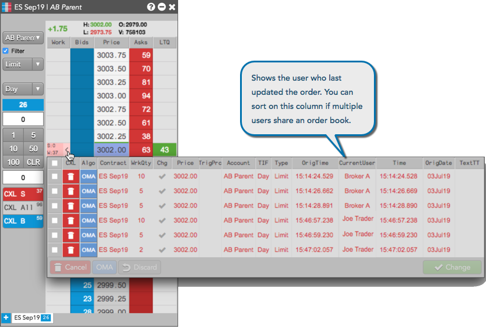
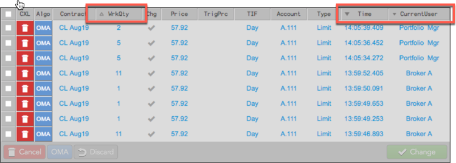

You can sort the list of orders based on the values in the Floating Order Book columns. To change the sorting order in the Floating Order Book, left-click the desired column to toggle between increasing and decreasing values.
Note: By default, the orders are sorted in descending order in the Time column.
If you share an order book with other traders, you can use the CurrentUser column to see who last updated each order in the floating order book. You can sort on the column to group the orders by user.

Hold down the Shift key while clicking additional column headers to also sort those columns. Custom column sorts are also saved and restored once applied.
